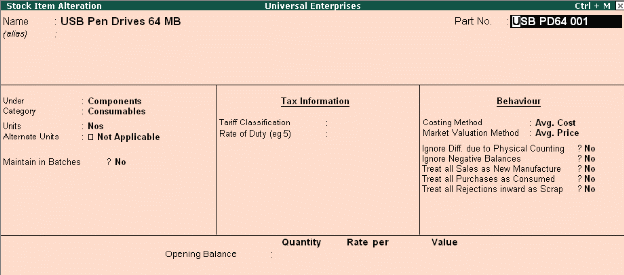
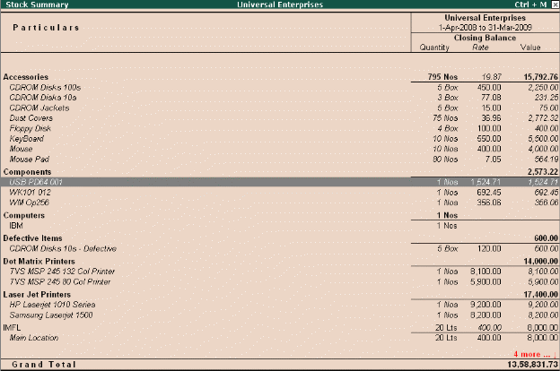

Use Stock Item Names and / or Part Numbers
Stock items can be created in Tally.ERP 9 by specifying their actual names as well as by their Part Numbers. This makes it convenient for many users dealing in certain industries (like Computer/ Automobile Industries) where items are generally identified by their Part Nos. You can also view reports for all stock items with their actual names or by part numbers or both.
To create Part Number for a Stock Item
Go to Gateway of Tally > Inventory Info. > Stock item > Alter (Create, if the Item is not existing)
# Select the required Stock item
# Press F12: Configure and set Use PART NUMBERS for Stock Items to Yes
# A new field Part No is displayed in Stock Item Creation/Alteration screen
Specify the part numbers as well as actual names for the stock items created/altered.

To view Stock reports with Part Number,
Go to Gateway of Tally > Stock Summary (or any other Inventory reports)
# Press F12: Configure, and set Appearance of Stock Item Names as Part No. Only
# Press Enter to save.
Now the stock items are displayed as Part Nos instead of their names.